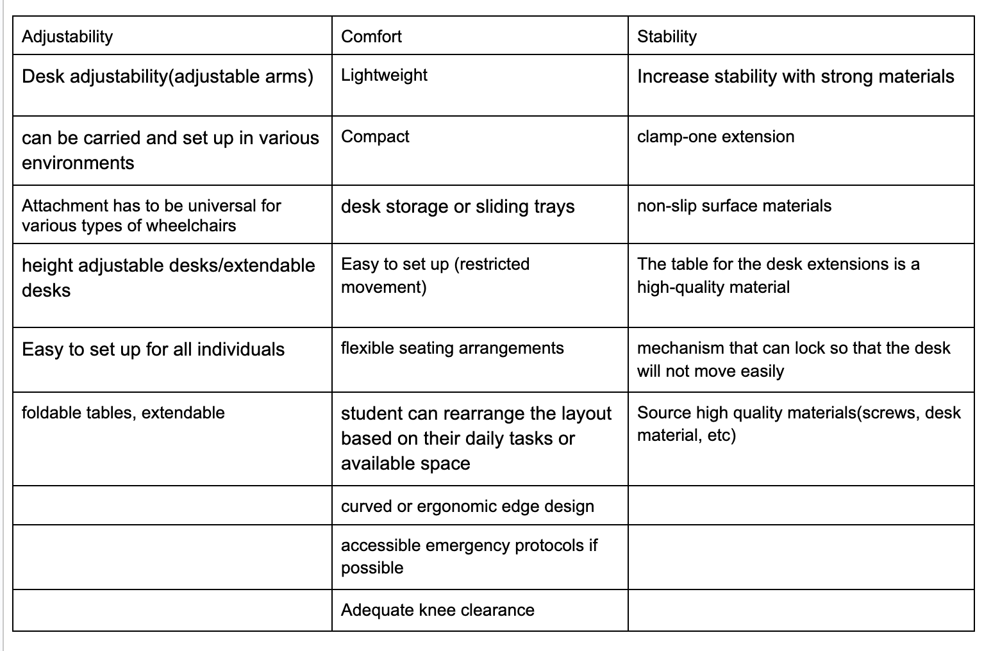
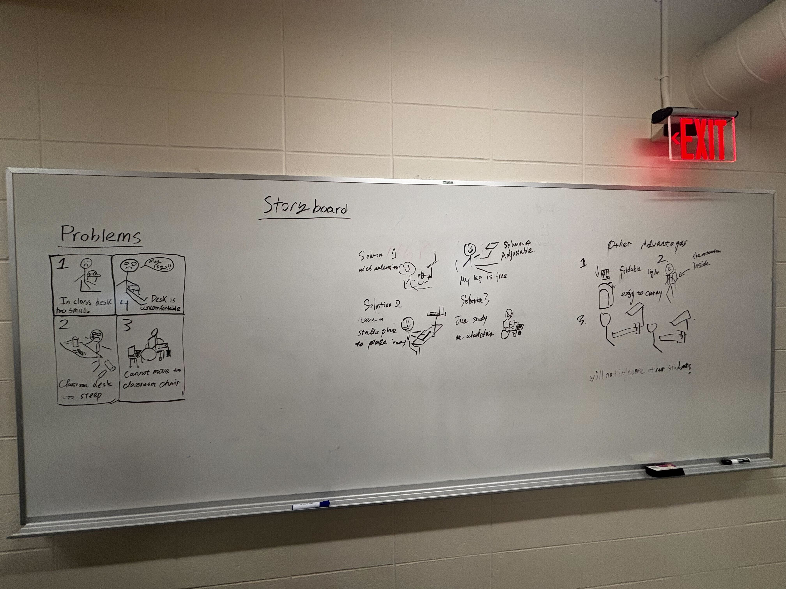

Final Project
Annotated Bibliography
Lily, Parker “How to Choose the Right Desk Extender for Your Needs” July 2, 2024. (https://www.autonomous.ai/ourblog/how-to-choose-the-right-desk-extender-for-your-needs) This source is helpful for us in terms of narrowing down the brainstorming process for our clamp design. Specification in terms of compatibility is very important in the design process and creating a desk extension that fits the needs of our consumers is crucial to the success of the design. It also goes over the pros and cons of various clamps for desk extensions so it gives us the framework to develop a product that balances ease of use along with durability.
“Desk Clamps and the best option for you”(https://atdec.com/know-how/best-clamp-for-you?srsltid=AfmBOopLd2_0-opxdL6Atkm3cCm--n7fipcYSl_fw2u-VoWukHymLjnr) This article is a great resource for our project as it goes over the most commonly used monitor arms specifically for desks. This information is key to aiding in the development of the strength of the design. The article goes into detail about the specific weight capacity for each clamp which is very important information to know so that we can determine the load that our desk extender will be capable of handling. Although this article is about monitor arms, the same sort of idea can be applied to our design in the sense that our extender will be braced by the clamp itself.
Leon, Reed “Desk Extensions – The 16 best products compared” September 22, 2023.(https://textspace.net/product-guide/desks-tables/desk-extensions/) The final source provides a comparison of 16 desk extension products based on various factors that are most important to consumers in terms of usability such as (ergonomics, storage, flexibility, and stability). This can help us significantly as it acts as a resource for us to pull from the best features from some of the listed products. This will help us improve our product by taking the strengths from separate products and then combining them into one. Also, by having all the links to these products accessible to us on the website we will be able to review what the consumers have said about the products and take away what they liked about the designs.
Interviews
Interviewees:
- F Major: Applied Mathematics & La Ciencia Computadora (Computer Science)Grade Level: Junior Classroom: Goldsmith, Golden Judaica
- C Major: Business Grade level: Senior Commonly used classrooms: Lecture halls, campus library Class Type: Lectures, projects, note-heavy lectures
- A Major: Business and Applied Mathematics Year: Freshman Common Classrooms: Engineering classroom, International Business School, Spingold Theater, Finance classroom (G-Zang)
- N Major: Biochemistry Grade: Freshman Common Classrooms:Large lecture halls (using long communal tables), Small classroom (small tables with chairs and tables)
Empathy Map:
🟡What do people SAY
- F: “The table is so small it's like playing Tetris, every time the computer doesn't fit and there's even less room for the mouse.”
- C: “The desks are small and tilted, laptops and coffee can barely fit at the same time, and things fall down all the time.”
- A: “The tables in the finance classroom are especially small and tilted so badly that pencils are always rolling down and it's impossible to take proper notes.”
- N: “Chemistry and Biology classrooms don't have enough table space for computers and laptops to be placed at the same time.”
🟢What do people THINK
- F: Félix:“The tables are just a formality; the school is strapped for cash and won't be replacing them with new ones.”
- C:“The school is more concerned about how to cram in more students and ignores the environment needed for real learning.”
- A:“The school may not have realized the magnitude of the problem or budgetary constraints may have prevented them from addressing the table issue.”
- N:“The school feels that the existing tables are barely functional and don't need to be replaced as often, and it's mainly a funding issue.”
🔵What do people DO
- F: Give up studying at a desk and move to an iPad or touching a fish and withdraw from the classroom on a spiritual level.
- C: Use a backpack on the floor to make desk space, use a laptop to cushion your computer, keep bending over to adjust and pick up items.
- A: Occupying neighboring desks or simply using the computer only to take notes, frequently picking up dropped pencils and other stationery.
- N: Putting the laptop on your lap or in the crevices of tables and chairs, adjusting your posture to fit into tight spaces as much as possible.
🟠What do people FEEL
- F: Humorous and self-deprecating, helpless and resentful, but taking it for granted and giving up resistance.
- C: Anxiety, frustration, self-consciousness, gradual resentment over time.
- A: Irritable, stressed, difficulty concentrating in class, frustrated, significantly less productive in school.
- N: Mildly disturbed, slightly resentful, no particularly dramatic mood swings, but feels that concentration could be improved with an improved desk.
Journey Map:
🔴 = Frustration/Stress 🔵 = Resignation/Indifference
| Stage |
Attending Class & Setting Up Materials |
Engaging in Class Activities |
Managing Distractions & Adjustments |
Post-Class Reflection & Adaptation |
| Steps |
1.Enter classroom. 2.Choose a desk. 3.Arrange materials (laptop, notebook, textbooks, coffee). |
1.Take notes or follow lectures. 2.Use laptop for presentations/digital materials. 3.Reference textbooks or handouts. |
1. Rearrange materials mid-lecture. 2.Prevent spills or accidents. 3.Attempt to refocus on the lecture. |
1.Reflect on desk-related challenges. 2.Seek alternative study spaces (e.g., library). 3.Avoid using problematic desks in the future. |
| Feeling/Thinking |
Annoyed (🔴), frustrated, resigned. |
Distracted (🔴), stressed, self-conscious. |
Aggravated (🔴), anxious, defeated. |
Resigned (🔵), relieved, indifferent. |
| Pain Points |
Desks are too small (e.g., 18"x24") to fit laptops and materials. Tilting surfaces cause items to slide (e.g., laptops, pens). Wobbly or unstable desks distract users. |
Constant micro-adjustments (e.g., wedging notebooks under laptops). Items falling off desks (e.g., textbooks, coffee). Reduced note quality due to lack of space. |
Time wasted fixing workspaces instead of learning. Embarrassment form disturbing peers. Long-term resentment toward classroom design. Money consuming to change desks. |
Inability to effectively learn in classrooms. Reliance on suboptimal alternatives (e.g., sitting on the floor). Lack of formal channels to address the issue. |
| Opportunities |
Larger desk surfaces (min 24"x36"). Flat, non-tilting desks for stability. Modular add-ons (e.g., slide-out trays, cup holders). |
Adjustable tilt with locking mechanisms. Ergonomic design (rounded edges, non-slip surfaces). Built-in grooves for pens/phones. |
Study materials to eliminate wobble. Designated spaces for beverages and devices. Clear channels to report infrastructure issues |
Prioritize ergonomic furniture in classroom upgrades. Student advocacy for infrastructure improvements. Temporary fixes (e.g., desk pads, anti-slip mats). |
| Quotes |
"They’re a small wooden table that folds into the side of a chair and look like an IKEA failure." "The tilt made my laptop slide, so I had to grip it with one hand while taking notes." |
"These constant micro-adjustments fracture my focus. I’ve noticed my notes get spottier in classes with worse desks." "My pencil kept rolling off the table because of the tilt." |
"Coffee nearly spilled on my keyboard." "It builds this low-grade resentment—like the environment isn’t designed for how we actually learn now." |
"It seems like everyone just puts up with it rather than actively trying to change." "This method [avoiding classrooms] is very effective and has almost zero side effects." |
Original Questions/Answers:
- Identify and recruit your interviewees.
- Please briefly describe yourself, such as your major, grade level, and which classrooms you regularly attend?
- F. Applied Mathematics & La Ciencia Computadora (Computer Science). Junior. Goldsmith & Golden Judaica. Pronouns: He/him
- C: I’m a fourth-year Business major who splits time between the lecture halls and the campus library. My classes often involve lectures, projects, and note-heavy lectures, so I’m constantly juggling a laptop, notebooks, a coffee cup, and textbooks.
- A, first-year student at Brandeis from Toronto, Canada. I am studying business and applied mathematics. I regularly attend the engineering classroom, my business class which is located in the International Business School, my theatre class which is located in the Spingold theatre, and my finance classroom located in G-Zang.
- N:I am a current freshman pursuing a major in Biochemistry and am currently enrolled in chemistry and biology classes. The desks I use in these classes vary a lot. In my large lecture halls I have a long table that is used by everyone in many rows going up. In smaller classrooms I have my desk connected to my chair.
- Can you describe specifically the desks you usually use in these classrooms? (e.g., size of desk, degree of desk tilt, stability, etc.)
- They're a small wooden table that folds into the side of a chair and look like an IKEA failure. These tables are fairly stable in the wobble department, though but still not a good little wood desk.
- Most classroom desks here are narrow, rectangular surfaces attached to chairs—maybe 18”x24” at best. They tilt slightly downward (maybe 5-10 degrees?), which is fine for writing but terrible for laptops. They wobble if you lean on them, and the edges dig into your forearms.
- ENGR classroom: Huge desks where multiple people can work. The desks are flat. These desks have wheels below them, which makes it easier to move and transport. Business class: Very long desks. Not much space front and back but very wide. They are flat and very stable. Unlike the engineering classroom desks, they do not move. Theatre: No desks.
- Finance: Super small desks. Never really understood why, as it is super inconvenient to do work. The desks vary in tilt, some are tilt right, tilt left, forward or backward. The desks are not very stable.
- Experience with the table
- During a recent class in one of these classrooms, did you experience a problem with tables that were too small or tilted? Can you tell us specifically about the situation?
- You asked me if I've ever had trouble with desks that are too small or tilted. All I have to say is that They are always muy poco and can't fit a computer at all. I don't even have a place to rest my mouse, so I have to live in humiliation on my trackpad. It's like playing Tetris every time I go to class, cramming my laptop, pen, textbook, and iPad together.
- Last week in my class lecture, I tried to balance my laptop, a textbook, and a coffee. The tilt made my laptop slide, so I had to grip it with one hand while taking notes. When I reached for my coffee, my elbow knocked the textbook off the desk. Coffee nearly spilled on my keyboard. I missed half the professor’s algorithm explanation because I was rearranging my stuff.
- Yes. In my finance classroom, I had a lot of problems with the length and the tilt. I could barely fit my notebook on the desk to take notes. Furthermore, my pencil kept rolling off the table because of the tilt making it super annoying.
- I have an issue with space with my desks. If I have a desk space issue I try to adjust my position so I can fit my computer and my notebook on the table. For example in my UWS class in lown 201, the desks are quite small, only permitting me to use my computer. This makes it difficult for me to have a notebook out. I adjust by putting the notebook on my thigh or wedged between the desk and chair. This affects my learning by making it worse.
- How do you typically adjust your learning style or behavior when there is not enough desktop space or when the tilt is significant? How does this adjustment affect your learning outcomes?
- I will use my ipad or I will just touch fish.
- I’ve started putting my backpack on the floor to free up desk space, but then I’m constantly bending down to grab pens or tools. If the tilt’s bad, I wedge a notebook under my laptop—but then I lose writing space. These constant micro-adjustments fracture my focus. I’ve noticed my notes get spottier in classes with worse desks.
- I usually try to use a second desk beside me if there isn’t another classmate beside me. If that is not possible, I usually just use my laptop, since I can follow the presentation as well as take notes at the same time.
- Deep-Rooted Causes
- Why do you think the school didn't address this issue in a timely manner?
- Because no dinero(money).
- The school likely prioritizes seating capacity over ergonomics. Those tiny desks let them cram more students into rooms built 20 years ago when laptops weren’t ubiquitous. There’s also no clear channel to report “small” infrastructure issues like this—unless a desk breaks entirely, maintenance ignores it.
- The school may not have addressed the issue of small desks due to budget constraints, as replacing furniture can be costly. Additionally, if students and teachers haven’t consistently voiced complaints, the administration may not see it as a priority. Bureaucratic processes and competing needs, such as technology upgrades or facility maintenance, could also delay action.
- I think it's a money issue, if it's good enough it does not need to be changed for a while. It's expensive to keep changing things.
- Emotions and Feelings
- Are you emotionally affected when you have problems with lack of desk space or tilting in the classroom, and do these emotions have a potential impact on your learning？
- You think I'm going to get emotional about this? No, no, no--it's just a stupid desk. I don't study at these desks at all. After all, it's just a formality to symbolize that I've been in the classroom, and then I “bow out” of the classroom on a spiritual level. I'm out.
- Absolutely. It’s aggravating to fight your workspace mid-lecture. I feel distracted and self-conscious when I’m the one rustling around. Over time, it builds this low-grade resentment—like the environment isn’t designed for how we actually learn now.
- Yes, when I don’t have enough desk space or my desk tilts, it can be really frustrating and distracting. It makes it harder to stay organized, and I often find myself feeling irritated or stressed. This definitely affects my focus, and over time, it can make it more difficult to stay engaged and absorb information effectively.
- I am not emotionally affected when I have problems with my desk, I think my focus would improve if i had a better desk.
- How do you think performance or focus in the classroom would change if the desk was able to meet your learning needs?
- Seriously, though, I'd be willing to take notes on a stable, non-shaking, non-creaking desk. I don't have to worry about the “time to wake up” warning sound when I touch the desk, and I don't have to worry about disturbing my classmates who are studying hard in front of me and behind me. This kind of “silent” comfort is actually quite important.
- If my desk met my learning needs, I think my performance and focus in the classroom would improve significantly. With enough space to organize my materials comfortably, I wouldn’t have to constantly adjust or worry about things falling off. A stable and properly sized desk would also reduce distractions, allowing me to concentrate better and stay engaged in lessons. Overall, a better desk setup would create a more comfortable and productive learning environment.
- Needs and Desired State Exploration
- If you could adapt the desk to make certain changes, what aspects of the desk would you like to see change?
- If I could design this desk, I'd like it to have a hidden cover that slides up and down so I could hide my cell phone. That way the teacher wouldn't find out I'm touching fish - a revolutionary design for the benefit of academic fishers in general.
- Flat, larger surfaces (min 24”x36”) to hold a laptop + notebook + beverage without precarious stacking. Adjustable tilt with a locking mechanism for writing vs. screen work. Sturdy materials—no wobble, rounded edges. Maybe add a groove for pens or a phone slot. Modular add-ons like slide-out keyboard trays or cup holders.
- If I could adapt the desk, I would make it larger to provide more space for books, a laptop, and writing materials. I’d also want it to be more stable, so it doesn’t tilt or wobble. Adding adjustable height options would make it more comfortable for different seating preferences, and having built-in storage or compartments could help keep things organized. A slight ergonomic tilt for writing and a smooth, durable surface would also make a big difference in improving usability.
- Can you recall a time when the minimal size of the desks hindered your ability to properly learn in class?
- At one point, I needed to jot down some notes, so I turned on my computer - but that desk only allowed me to put down half of my computer, with the other half dangling out of the desk like a classic Titanic scene.
- During a midterm essay in a literature elective, the tiny desk forced me to write with my paper half-hanging off the edge. My handwriting turned illegible, and the TA deducted points for “lack of clarity.”
- Yes, during an exam, the small desk made it hard to manage my papers and calculator. I kept rearranging everything, which was distracting and stressful, making it harder to focus and do my best.
- Other additions
- Do you think the school or other students have noticed the problem? Have you communicated with each other about this issue?
- Everybody should be noticing the problem–those who don't are probably spies. We’ve communicated extensively regarding this issue.
- I think some students have noticed the problem, but it hasn’t been widely discussed. A few classmates have mentioned the desks being too small or uncomfortable, but I’m not sure if anyone has formally raised the issue with the school. It seems like something everyone just puts up with rather than actively trying to change.
- I would increase the size of my desk so I have more space.
- Have you yourself or other students tried any methods to solve this problem? How effective were they?
- It's simple - give up on therapy. We choose to ignore the desk, give up studying in the classroom, and take our studying to the library, dorm, or any decent desk. This method is very effective and has almost zero side effects.
- Some students complain about the desk but there’s no organized push. I’ve seen students squat on the floor with laptops—it is not comfortable to sit on the ground
- No, neither I nor other students have tried any methods to solve the problem. It seems like everyone just adapts to the situation without attempting to find a solution.
- I do not think it's a big enough problem for people to be noticing or communicating about it, I have not tried any methods
Brainstorm
1.1 interview Debrief
How did your interviews go?
- Various kinds of emotional responses from individuals in different areas of study.
- Received information on specific needs of students based on their major.
- The interview length was good to keep participants engaged in the questions.
- Wrote open-ended questions to allow participants to give their own input on what they wanted to see improve.
Did you get the type of information you were looking for?
- Yes the variation in questions allowed for a well-rounded data collection to serve as a foundation for us to build upon.
Do you wish you could have found other types of perspectives?
- Interview on the perspective of the Professors at the university as they have long-term experience and knowledge on what works and doesn't inside of the classroom setting.
1.2 Thematic analysis
Problems, Potential solutions, Emotions, Needs
| Problems |
Needs |
Emotions |
Potential Solutions |
| Desk size(too small) |
More desk space |
Anger |
Desk extensions |
| Lack of mobility |
Customizability(desk height) |
Frustrations |
Computer stand |
| Lack of accessibility |
Lightweight |
Stress |
Extendable arms to boost ergonomics |
| Tilting Surfaces |
Compact(foldable) |
Distracted |
Increased stability(improved mechanical parts) |
| Discomfort |
Easy to use |
Anxious |
Desk Adjustability |
1.3 Create insight statements
- Students who frequently use desks in a lot of their classes describe a need for more desk space, so they can have a comfortable workspace and not get distracted during class.
- The introduction of the desk extender for individuals in wheelchairs would add a degree of accessibility for those with mobility issues who are unable to access standard classroom desks.
- Students who frequently use desks in classes complain they need more stable desks because they are easily distracted by the tilting surfaces of the desks.
1.4 Draft “how might we” statements
- How might we create more comfortable desk space(workspace) for students?
- How might we create a more accessible classroom environment to allow individuals in wheelchairs to more conveniently take part in academic courses?
- How might we increase desk stability to improve overall focus in class?
2 Brainstorming
2.1 Prepare
Features:
- arms that can stretch out
- table that can have more space
- table that can stretch out
- foldable desk
- capable of holding a computer, drinks, writing, etc. stable mechanical parts
- could be fixed at wheelchair or a classroom desk
- easy to install
- easy to carry, portable?
- Lightweight(mobility)
2.2 Ideate
First HMW how might we statement: How might we create more comfortable desk space(workspace) for students?
- Desk adjustability(adjustable arms)
- Increase stability with strong materials
- desk storage or sliding trays
- can be carried and set up in various environments
- height adjustable desks
- extendable desks
- student can rearrange layout based on their daily tasks or available space
- Easy to set up for all individuals
- The table for the desk extensions is a high-quality material
Second HMW:The introduction of the desk extender for individuals in wheelchairs would add a degree of accessibility for those with mobility issues who are unable to access standard classroom desks.
- Lightweight
- Compact
- Adjustable
- Easy to set up (restricted movement)
- Attachment has to be universal for various types of wheelchairs
- flexible seating arrangements
- accessible emergency protocols if possible
- The extender must improve functionality
- Adequate knee clearance
Third HMW: How might we increase desk stability to improve overall focus in class?
- Source high quality materials(screws, desk material, etc)
- clamp-one extension
- non-slip surface materials
- curved or ergonomic edge design
- More supports(stabilizers)
- mechanism that can lock so that the desk will not move easily
- foldable or detachable design, portability

2.5 Narrow down
Clamp-on extension, foldable or detachable design(portability), Desk adjustability
2.6 Final selection
In order for the desk to have a universal fit, both the clamp-on extension as well as desk adjustability will be a priority for us to meet the needs of the consumers.
Story Board:

Reflection
Through our group brainstorming we reviewed our interveiwees' answers and clarified our problems. We grouped up similar problems and brainstormed different features and designs to solve these problems. We also used "How might we" statements to narrow down our main themes of this product. Finally creating a story board to summarize ours problems and solutions for them.